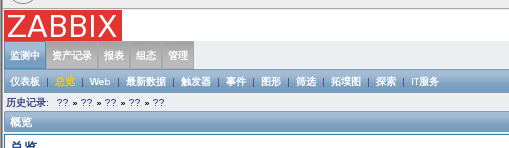
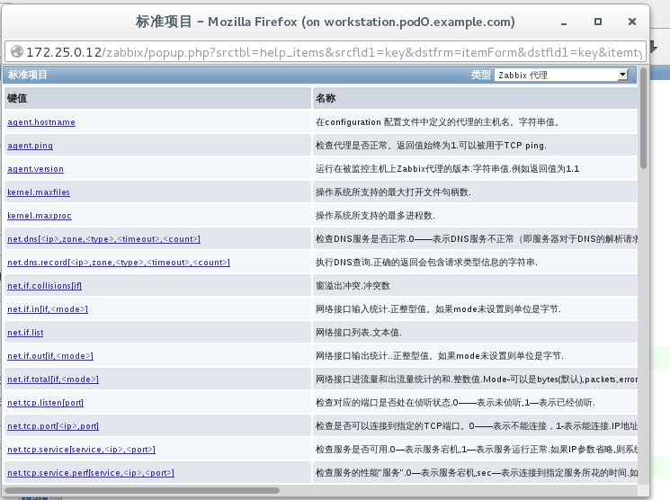

集中化监控工具 zabbix
[TOC]
##系统监控需求
在互联网的应用中，我们大量的使用网络和服务器来完成项目平台的搭建，在系统运维过程中，我们需要获取很多网络和服务器运行的信息，比如：网络流量、主机CPU 使用率、主机内存使用率、主机磁盘使用率等。这些信息我们可以通过网络或主机设备上的命令行指令获取，但这样很不方便，尤其是主机和设备非常多的情况下获取这些信息。想象一下我们管理的是由1000 多台物理服务器和50 多台网络交换或路由设备组成的一个私有云，如果我们需要人工的获取这些服务器和设备的运行状态、网络流量和服务状态是非常耗时且无法完成的。更不要说在这1000 多台物理服务器上运行着3000 或更多的虚拟服务器，每个服务器上又运行着相互关联的负责均衡集群、分布式计算集群、分布式存储集群、高性能计算集群等复杂的应用集群方案。我们必须实时的获取它们的运行状态，并且分析在过去1 小时、24 小时、1 周、1 月、1 年的数据变化趋势。我们需要获取和保持这些数据并且在需要的时候能够方便的展示出它们的可视化视图。
不仅仅是获取实时的运行数据，我们还需要有一套完整的报警机制。在服务器、网络设备、资源服务、业务逻辑等出现异常的时候可以通过WEB、邮件、短信、电话等方式自动化的通知管理人员。这种报警机制必须是可配置的，可以根据我们系统应用的具体情况做出合理的方案，比如设置CPU 使用阀值、报告内存突然的增长、服务器流量异常、应用服务负载异常、集群服务故障迁移等等情况。
随着项目的的推进，我们还需要通过分析记录数据预估出未来可能需要的资源容量，例如服务器数量是否需要增添及何时增添、网络带宽是否出现瓶颈及何时增添、应用服务器是否需要平行宽展及何时扩展等等。这些都需要大量且长期的数据分析支撑，也就是长期有效的系统监控数据支撑。
##常见的监控解决方案
早期，网络环境中的设备数量尚且不多的时候，人们需要监控的仅仅是几台服务器、一些交换机以及少量的其他设备。首先就需要有方法将人们关心的各项数据从设备中提取出来，然后再考虑如何集中化的展示出来。
为了满足提取各项数据的需求，互联网工程工作小组（IETF,Internet Engineering Task Force）定义并发布了简单网络管理协议（SNMP）。该协议能够支持网络管理系统，用以监控连接到网络上的各种设备。Linux系统当然也支持该协议。人们可以使用SNMP协议获取主机CPU、内存、磁盘、网卡流量等数据，很多商业网络设备如路由器、交换机等基本也支持SNMP协议。
最初，人们用脚本将获取到的SNMP数据存入数据库中，然后再使用一种名为MRTG的软件根据获取的数据绘制图表来分析数据的变化。MRTG(Multi Router Traffic Grapher)，顾名思义，这款软件最初是设计用于监控网络链路流量负载的。它可以用过SNMP获取到设备的流量信息，并根据这些信息绘制成图表并保存为PNG格式的图片，再将这些PNG图片以HTML页面的方式显示给用户。
不过，MRTG展示的页面和图表曲线相对简陋，它在一张图片中最多只能绘制两个数据的变化曲线，并且由于是PNG格式的静态图片，所以无法针对某一时间进行细化展示。为了解决这个问题，人们又开发了RRDTOOL工具。
RRDTOOL(Round Robin Database Tool)是一个强大的绘图引擎。RRDTOOL可以使用自己的环状数据库（RRD）来记录绘图数据，也可以使用关系型数据库，例如MySQL来纪录数据。利用RRDTOOL我们就可以将获取到的SNMP数据通过RRDTOOL进行实时绘图，这么一来，想看什么时候的数据，只要调取那个时间的监控数据，让RRDTOOL帮我们画一张图出来就可以直观又清晰的查看了。目前，几乎所有的开源监控软件都在使用RRDTOOL作为图形绘制引擎。
不过，直接使用RRDTOOL绘图操作起来很麻烦。同时，现如今的数据中心动辄成百上千的设备，一个个的去提取、绘制、监控显然是不现实的事情。况且，不同的设备监控的对象和方法也不同。有些数据依靠SNMP也提取不到（例如MySQL查询缓存命中率）。我们迫切的需要一个可以支持多种不同的监控手段，同时具有分类组织图形并且可以按照分类页面的方式展示这些图形的工具。另外，考虑到企业组织结构越来越复杂，参与监控的人员往往属于不同的部门或者工作组，不同的人也应该限定具有不同层级的监控浏览权限。除此之外，还有很多各种各样杂七杂八的需求不一而足。所以，现如今的监控软件不可以再像MRTG那样仅仅画张图就了事，还需要考虑更加丰富的功能。
Cacti 是一套基于PHP、MySQL、SNMP 及RRDTool 开发的监测图形分析工具。它提供了非常强大的数据和用户管理功能，可以指定每一个用户能查看树状结构、主机以及任何一张图，还可以与轻量级目录服务（LDAP）结合进行用户验证，同时也能自己编写模板，功能非常强大完善界面友好。可是随着设备的不断增多，Cacti 的运行机制就不能满足我们的需求了。Cacti 是使用轮询的方式由主服务器向设备发送数据请求来获取设备上状态数据信息的，如果设备不断增多，这个轮询的过程就非常的耗时，轮询的结果就不能即时的反应设备的状态了。
Cacti 监控关注的是对数据的展示，却不关注数据异常后的反馈。如果凌晨3 点的时候设备的某个数据出现异常，除非监控人员在屏幕前发现这个异常变化，否则是没有任何报警机制能够让我们道出现了异常。这个时候我们就需要一种可以根据我们预设阀值报警的工具。自动化监控报警服务有很多，其中商业应用比较昂贵且多以硬件为主，开源自动化监控报警服务中最著名的也是应用最广泛的是Nagios。
Nagios 是一款开源的免费网络监控报警服务，能有效监控Windows、Linux 和Unix 的主机状态，交换机、路由器和防火墙等网络设置，打印机、网络投影、网络摄像等设备。在系统或服务状态异常时发出邮件或短信报警第一时间通知运维人员，在状态恢复后发出正常的邮件或短信通知。Nagios 有完善的插件功能，可以方便的根据应用服务扩展功能。Nagios 可以使用服务-代理（Server-Agent）方式获取主机信息，也可以使用SNMP 方式获取设备信息。使用服务器-代理（Server-Agent）方式在每个主机上运行代理软件，主机上的代理软件主动提交数据信息，可以避免服务器轮询带来的延迟和非实时性等问题。
Nagios 已经可以支持由数万台服务器或上千台网络设备组成的云技术平台的监控，它可以充分发挥自动化运维技术特点在设备和人力资源减少成本。只是Nagios 无法将多个相同应用集群的数据集合起来，也不能监控到集群中特殊节点的迁移和恢复。
##zabbix是什么
Zabbix是一个基于WEB界面的提供分布式系统监视以及网络监视功能的企业级的开源解决方案。zabbix能监视各种网络参数，保证服务器系统的安全运营；并提供灵活的通知机制以让系统管理员快速定位/解决存在的各种问题。
zabbix server可以通过SNMP，zabbix agent，ping，端口监视等方法提供对远程服务器/网络状态的监视，数据收集等功能，它可以运行在Linux, Solaris, HP-UX, AIX, Free BSD, Open BSD, OS X等平台上。
zabbix agent需要安装在被监视的目标服务器上，它主要完成对硬件信息或与操作系统有关的内存，CPU等信息的收集。zabbix agent可以运行在Linux,Solaris,HP-UX,AIX,Free BSD,Open BSD, OS X, Tru64/OSF1, Windows NT4.0, Windows (2000/2003/XP/Vista)等系统之上。
zabbix server可以单独监视远程服务器的服务状态；同时也可以与zabbix agent配合，可以轮询zabbix agent主动接收监视数据（agent方式），同时还可被动接收zabbix agent发送的数据（trapping方式）。另外zabbix server还支持SNMP (v1,v2)，可以与SNMP软件(例如：net-snmp)等配合使用。
相比较Cacti，Zabbix具有不亚于Cacti的图形表现效果，同时还支持监控报警功能。并且内置的监控模板比Cacti要丰富的多得多。
相比较Nagios，Zabbix安装配置要简单的多，利于实现。同时学习成本也要低得多。在监控性能方面也不亚于Nagios。因此，目前越来越多的公司开始使用Zabbix作为监控的最佳解决方案。
zabbix的优缺点
优点
- 开源，无软件成本投入
- Server 对设备性能要求低
- 支持设备多，自带多种监控模板
- 支持分布式集中管理，有自动发现功能，可以实现自动化监控
- 开放式接口，扩展性强，插件编写容易
- 当监控的item 比较多服务器队列比较大时可以采用被动状态，被监控客户端主动从server 端去下载需要监控的item 然后取数据上传到server 端。这种方式对服务器的负载比较小。
缺点
- 需在被监控主机上安装agent，所有数据都存在数据库里，产生的数据据很大，瓶颈主要在数据库。
zabbix基于agent采集数据的方式
被动模式
Zabbix服务器端按照监控配置项目制定的时间间隔，定期连接到agent上的守护进程，获取agent组件采集到的数据。
###主动模式
Agent端从server端获取采集数据的监控项目列表及其配置信息。而agent端确定所需要的连接zabbix服务器代理的方法是，从agent的配置文件中读取serveractive该配置项的内容。读取频率RefreshActiveChecks指定，默认120s。
主动模式的好处：当被监控设备代理组件所封装的监控项目种类不能满足需要的时候，完全可以使用我们擅长的任何一种高级语言来开发小的工具或者脚本模拟一个组件，从而实现个性化需求。然而通过小工具或者脚本模拟组件时，一般来说使用主动模式会比较方便。原因就是：使用主动模式时，这类小工具不需要以守护进程的方式运行，更不需要在被监控设备上开额外的服务端口，只需这类小工具或脚本能定时将所采集到的数据发送至zabbix服务器或其代理指定的端口上。
zabbix基本组件的安装配置
zabbix的安装包括四个部分：server服务端、agent数据收集端、web配置管理端、数据保存数据库端。
架构如下：
| 设备 | 应用端 |
|---|---|
| servera | agent |
| serverb | server |
| serverc | web |
| serverd | database |
先保证我们所有服务器的时区都是Asia/shanghai，分别在每台服务器上执行以下命令
[root@servera ~]# timedatectl set-timezone Asia/Shanghai |
Server端的安装
软件安装，这里server端通过源码编译的方式，将服务主目录放置/usr/local/zabbix目录下：
[root@serverb ~]# setenforce 0 |
服务端的数据库连接配置：
[root@serverb zabbix-2.4.6]# cd /usr/local/zabbix/ |
Database端的安装
安装mariadb-server软件：
[root@serverd ~]# setenforce 0 |
登录上serverb这台服务器，将sql语句远程复制到数据库服务器上：
[root@serverb database]# cd /tmp/zabbix-2.4.6/database/mysql/ # 注意：需要导入的数据在server端。 |
mysql服务器将对应的sql语句进行导入的操作，三个sql文件的导入顺序不能出错：
[root@serverd ~]# mysql |
mysql授权，授权给server端及web端：
[root@serverd ~]# mysql |
Web端的安装
安装web端所需要的软件：
[root@serverc ~]# setenforce 0 |
变更web端相关配置文件，指定时区。
[root@serverc zabbix]# vim /etc/httpd/conf.d/zabbix.conf |
启动所有相关服务软件
server端的启动
[root@serverb sbin]# cd /usr/local/zabbix/sbin/ |
web端的启动
[root@serverc zabbix]# systemctl restart httpd |
通过图形化界面初始化web端：
登录workstation，打开浏览器访问
保证php环境满足需求
填写数据库相关配置
填写server端相关信息
安装完成，登录，默认用户名为admin，密码为zabbix。
web端的初始化完成。
Agent端的安装
[root@servera zabbix]# rpm -ivh zabbix-2.4.6-1.el7.x86_64.rpm zabbix-agent-2.4.6-1.el7.x86_64.rpm |
配置agent端相关参数
[root@servera zabbix]# vim /etc/zabbix/zabbix_agentd.conf |
zabbix变更中文环境###
点击右上角profile参数，可以看到如下界面，Language这里选择chinese（zh_CN）即可
但是会有一些问题，并不是所有的语言都被顺利翻译成了中文，比如这里出现的问号。

主要原因是由于mysql数据库的字符集格式，我们默认使用的字符集为utf8，而mysql里的字符集为latin1。
MariaDB [(none)]> show create database zabbix; |
这里采用以下操作来变更字符集
[root@serverd ~]# mysqldump zabbix > /tmp/zabbix.sql |
变更完成后，对应问号部分会显示中文，代表中文环境切换正常。
##zabbix的使用
监控配置流程
使用zabbix配置监控之前，先要了解zabbix的监控流程。一次监控配置的流程可以简单描述为：
配置监控主机组及主机
为了方便管理和易于查看。在监控系统中往往根据被监控的主机角色或其他属性将同类主机划分到同一个主机组中。在Zabbix中可以很方便的添加新的主机组。
添加主机组：
点击组态->主机群组->创建主机群组
添加监控主机：
点击组态 ->主机 ->创建主机，配置一台新的监控。

配置监控项
应用集的配置：
点击组态–> 主机 –> 应用集–>创建应用集
配置监控项：
点击组态–> 主机–> 项目–>创建监控项。
这里实际监控的具体内容可以通过两种方式完成
1.通过预设键值的来完成，点击键值右边的选择，则出现如下图示，可自行选择常用监控内容：

2.自定义键值
可通过配置客户端的zabbix_agent.conf里的Userparameter参数完成
[root@servera zabbix]# vim zabbix_agentd.conf |
该监控项自定义结果可以通过server端的zabbix_get命令检测
[root@serverb bin]# ./zabbix_get -s 172.25.0.10 -k mysqlping |
配置报警
之前我们已经配置了一个cpu-idle的监控项，该监控项是用来监控CPU空闲率的。那么通常情况下，当性能出现瓶颈时，我们都会选择及时报警，以便能够及时解决问题。
报警模式分成三种
- Email 通过邮件报警
- Jabber 通过一个名为jabber的软件实现报警，该软件使用很高效的通信协议，然而国内没有好用的jabber的第三方插件。
- SMS 通过短信报警，需要安装一个GSM猫，此方式需要对于信号质量有一定的保证。
在我们实验环境就通过邮件来完成报警的操作。
配置报警的流程：
1.配置触发器：点击组态–> 点击主机–>点击触发器–> 创建触发器–>选择表达式
表达式部分点击添加后如下:
当配置完触发器之后，若被监控主机满足触发条件，则会在仪表盘看到如下信息
2.配置报警动作相关
具体操作如下
1）配置报警动作：
组态–>动作–>创建动作
名称：该动作的名称
默认操作步骤停留时间：发现问题后多长时间执行动作
默认标题：报警信息的标题
默认消息：报警信息的内容
恢复消息：故障恢复后的消息内容。如果不开启则不会发送故障恢复通知。
这里的消息内容就是报警邮件的内容。我们可以在内容中使用Zabbix内置宏，邮件发出时会自动将宏替换成对应实际信息。
需要特别解释一下的是“步骤”部分的配置。所谓步骤是指报警可以有多个步骤，做不同的报警。例如，自从1到3，就是指报警的步骤有三个。步骤持续时间就是一定时间后如果监控人员仍未响应报警就进入下一个报警步骤。例如，发邮件给你报警，如果60秒后你没响应，那就发jabber信息提醒你。如果60秒后还没响应，那就发短信给你。要是还没响应，就没有然后了。你可以形象的把它理解为Zabbix的一哭二闹三上吊。
2）配置用户送出信息相关：
点击管理–>点击用户–>选择admin用户–>点击用户示警媒介–>添加
3）配置smtp服务器指向
点击管理–> 点击示警媒介类型 –>选择Email–>填写smtp服务器相关参数
至此报警配置完成，触发一些操作使CPU空闲率低于20%。
登录邮箱（mail.podx.example.com）
用户名admin 密码uplooking
登录后则会看到相应报警提示：
配置图形
点击组态–>主机–>点击图形–> 创建图形
配置模板
一般情况下，我们都会以模板的方式来存储多个已配置完成的监控项，以便和添加的主机进行关联操作。
点击组态–> 点击模板–>创建模板
添加完模板后，可以在模板里面进行应用集、监控项、触发器等配置
配置完监控项等内容之后，只需一步操作，即可使多台监控主机应用模板当中的配置，使我们的模板和主机关联即可。
配置zabbix的自动探索
创建探索规则：
点击组态–> 点击探索 –> 点击创建发现规则
配置发现后动作，和http模板相关联：
点击检测中–> 探索，就可以看到多台主机已经被发现了
并且：该主机已经和模板关联。
zabbix的proxy配置
zabbix可以作为一个分布式监控服务器，而在这环节当中，最重要的就是proxy这个组件。
在这里，我们以serverj作为zabbix的代理服务器。
软件安装
[root@serverj zabbix]# yum -y localinstall zabbix-proxy-2.4.6-1.el7.x86_64.rpm zabbix-proxy-mysql-2.4.6-1.el7.x86_64.rpm zabbix-2.4.6-1.el7.x86_64.rpm fping-3.10-4.el7.x86_64.rpm |
配置proxy的相应参数
[root@serverj zabbix]# vim /etc/zabbix/zabbix_proxy.conf |
配置数据库相关
[root@serverj zabbix]# systemctl restart mariadb |
启动zabbix-proxy服务
[root@serverj zabbix]# systemctl restart zabbix-proxy |
配置zabbix-agent端
要求允许zabbix-proxy服务器采集监控数据
[root@servera nginx]# vim /etc/zabbix/zabbix_agentd.conf |
设置Web端
打开浏览器访问zabbix-web端，在web端将该代理节点添加进去，并选择哪些主机由代理监控。